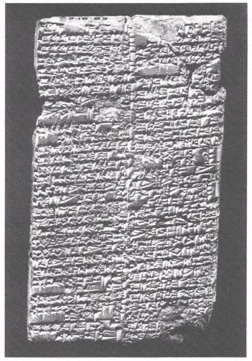
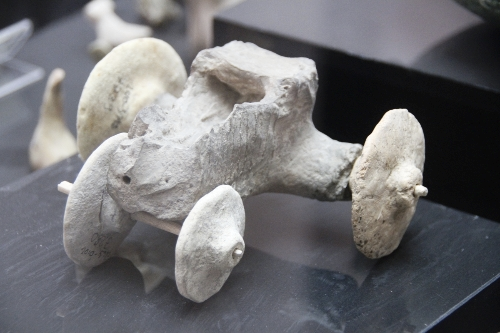
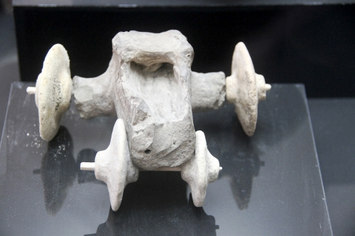
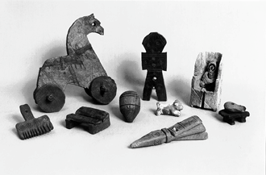
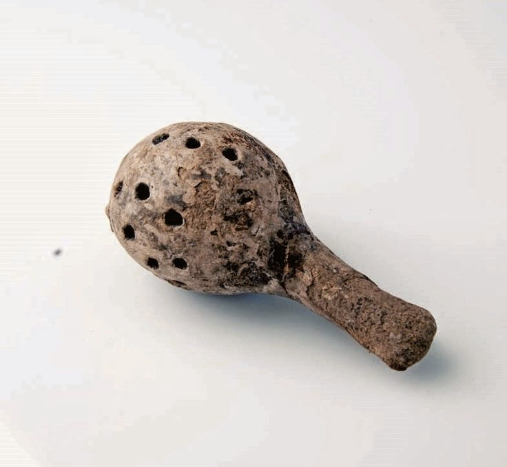
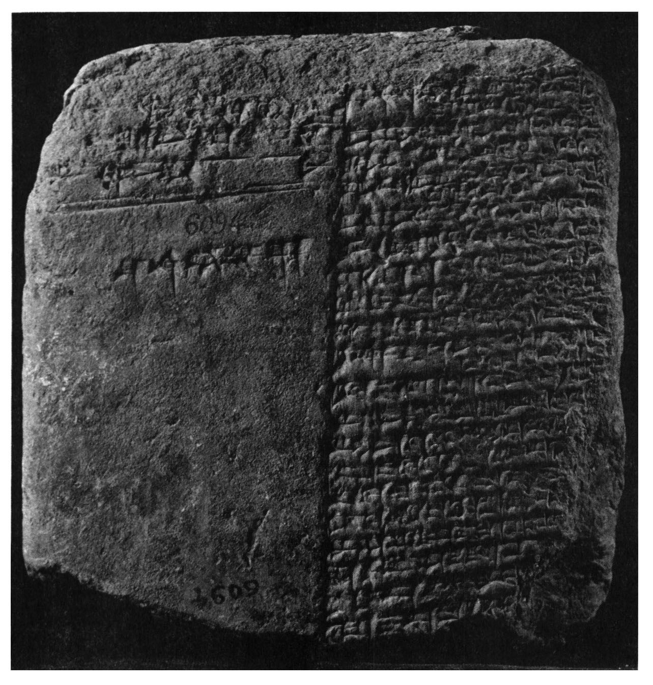
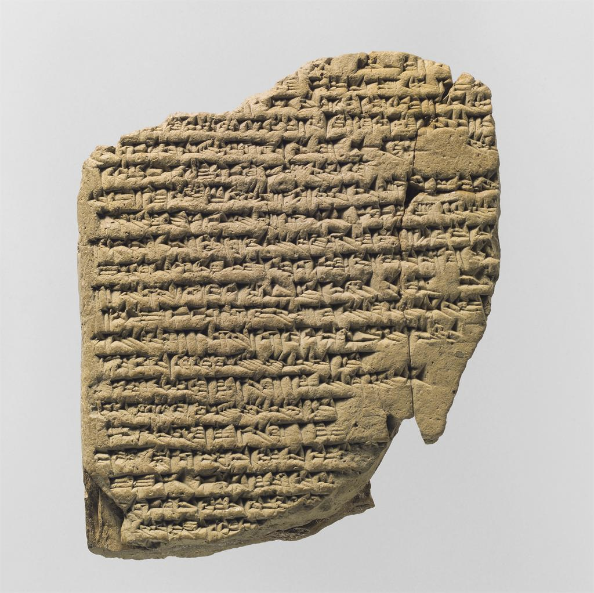

The widespread idea that, until just a few centuries ago, society viewed children as “little adults,” traces back to the publication of Centuries of Childhood by Phillippe Ariès in 1962. The theory, partly faithful to Ariès’ original conclusions and partly shaped by popular interpretations of his and others’ ideas, states that before the 17th century Europeans did not have a concept of childhood as a stage of life separated from adulthood. Therefore, they devoted little time to children, not caring to protect them from sexuality and other adult ideas and experiences. Today, most scholars agree that these are oversimplifications, and that all societies have had some way to distinguish between children and adults (Stearns, 2006).
There is some debate, however, about qualitative differences in the concept of childhood in different societies across history. Nonetheless, regardless of present disagreements, it seems to make little sense to try to measure this concept as it ap-pears in historical sources against our modern version—just another version, after all—of what it entails. I will argue that the evidence from the Ancient Near East con-tributes to the idea that distinctions between childhood and adulthood have been made much earlier than the 1600s, suggesting that it is more appropriate to think of childhood as an ever oscillating global phenomenon rather than tracing its origin back to a specific time and geographic location.
One of the reasons why scholars might have been convinced that childhood was absent from past civilizations is the difficulty in accessing information about the topic. The relative scarcity of direct sources on the experience of childhood is not exclusive to the Ancient Near East. Compared to other demographics, children con-sistently leave very few records. Scholars may work with an adult’s personal recollec-tions or their narratives about children, and they might gain access to artifacts such as toys and school objects, but the lives of children from their own point of view are difficult to grasp. As Peter Stearns puts it, “childhood is in part defined by adults and adult institutions” (p. 4).
THE FIRST AGRICULTURAL SETTLEMENTS
To our purposes, the most important historical shift in the history of the Near East is the transition from a hunter-gatherer to an agricultural society, which in Mesopota-mia was a gradual process that began around twelve thousand years ago with the rise of the Neolithic Age. At least 90% of human history was spent under a system of hunting and gathering, and so this was when the first ideas about childhood were formed. At the same time, the little knowledge we have of this period comes from material remains and observations of contemporary hunter-gatherer societies. The lack of sources from this period leaves us with little to say about childhood, with some important exceptions.
First, there were major constraints on the birth rate and the size of families. The con-stant movement to new locations made it very difficult for families to carry more than one small child. Until their adolescence, children’s needs surpassed the bene-fits of any contributions they could provide to the family subsistence. More of a burden than a blessing in economic terms, children were rarely depicted in primitive art, and families typically had no more than four children over their lifespan.
The development of agriculture, in turn, caused a surge in fertility, mainly because of the expansion of food supply that it enabled. For children, agriculture also had new significance in terms of utility. Although it was still costly to nourish offspring, families could now count on their descendants to start working from the age of five and to actively contribute to the family economy in their mid-teens. And while there were still constraints on the maximum possible birth rate, “childhood became a more important part of society, both economically and quantitatively,” (p. 21) repre-senting around half of the total population (Stearns).

Figure 1: "U-a a-u-a." World's first lullaby. (Kramer)
LIFE AS A MESOPOTAMIAN CHILD
Early days.Mesopotamian culture distinguished between the child, the adult and the elderly person. Lists of food rations from 2,000 BCE in Sumerian archives and later from Babylonia and Assyria separate more specifically into age groups composed of in-fants and young children, adolescents, adults and old people. Healthy children in Ancient Mesopotamia could expect a relatively long life, with most people reaching their forties. However, and more importantly, most of the dangers associated with mortality were faced in early childhood (Stol, 1995).
Because of this, while our modern western society tends to associate childhood with joy and playfulness, most Mesopotamian records define it as a time marked by fear. Families were filled with anxiety from pregnancy to birth and throughout develop-ment, passing each stage with the use of prayers and incantations to prevent evil spirits, evil omens and early deaths (Stol, 2000). Of these practices, it is worth noting the world’s first lullaby, excavated in Nippur. Mesopotamians sang lullabies to their babies because they feared that their crying would awake and disturb the gods, and so a mother’s chanting would go, “come Sleep, come Sleep / Come to where my son is” (Kramer, 1956).
Despite all the worrying, there were other aspects of early childhood that can easily be seen as timeless. As illustrated in figures 2 and 3, grave excavations have re-vealed dolls, balls, animal figures and wheeled toy chariots and wagons (Colón, 2001). There were also rattles (see figure 4), a game of jump rope, slingshots and other toy weapons. Girls could play house with their miniature pieces of furniture made out of clay.
Such toys as survive are now dutifully inked with museum acquisition num-bers and locked up in glass cases. But on some Saturday should an errant child come by and gaze at them, her eyes may yet light up with an antique joy. (Bertman, 2003, p. 299)
There would be little space for these objects in a society that regarded children merely as small adults.

Figure 2: toy chariot. Mardin Museum, Turkey. Circa 5500 BCE.

Figure 3: toys, including a baby rattle, a horse on wheels, two dolls, a clay dog, miniature furniture, and a toy weaver's comb.

Figure 4: baby rattle. Found in Kültepe. Circa 2000 BCE.
Learning and education. Childhood was a time for preparation. Only boys were sent to school in Mesopota-mia, where the institutional structure reproduced that of the family. Professors were called “school fathers,” students were “school sons” and assistants were “big broth-ers.” There was a well-defined curriculum that children should learn, which dictated scholarly and creative work, including reading and writing, mathematics, learning about nature, drawing and composing poetry. An essay from 2,000 BCE narrates scenes that are universal in the life of a student, describing a father who expects his son to excel in school and bring pride to his family (Colón, 2001).

Figure 5: "Schooldays: The Teacher's Blessing." (Adams)
In addition, children grew up reading tablets specifically written for their age. Alt-hough there was no children’s literature as the term is used nowadays, there were certainly materials that were considered suited for children in specific educational stages, determined not only by their grammatical level but also by their content, such as Sumerian fables that carried important life lessons (Adams, 1986). Again, these are evidence that there were clear ideas associating childhood as a stage of life with appropriate forms of culture and behavior.
CHILDREN AS DESCENDANTS
The concept of childhood was also present in a legal realm, where important con-siderations were made about children’s obligations and rights towards their parents. The code of Lipti-Ishtar, from the 20th century BCE, is the earliest source of evidence that Sumerians assigned certain responsibilities to parents. Hammurabi’s code, two centuries later, mentioned children in 16 of its 282 clauses. In these laws, women and children were treated as the possessions of the man (Colón, 2001). For young women to be taken as wives it was important to preserve their virginity, which could indicate some that there was some concept of purity associated with young age. In fact, it is unclear whether the Akkadian word
batultu meant “virgin” or “teenager.”

Figure 6: Code of Lipti-Ishtar.
It was absolutely essential for Mesopotamians to produce offspring. In Babylonia, childlessness was unacceptable: despite the prevalence of monogamy, men whose wives were sterile were allowed to take on a second wife who would give them chil-dren. Mesopotamians who could not give birth even went so far as to adopt, which was essentially a contract between the adopted child and their parents, where pa-rental care was provided in exchange for the child’s own commitment to sustaining their parents through old age. The older the child was, the more the relationship would resemble such a contract (Stol, 1995), indicating that there were different lev-els of expectations for accountability and responsibility according to age. In fact, even adults could join a family, in a formal contract called “arrogation” which could result in grave consequences if broken.
The importance of having children and the nature of parental relationships as legally regulated contracts reveal one of the most important aspects of the social function of children, namely as descendants who would perpetuate the family’s lineage and wealth.
CONCLUSION
Anxiety, playfulness, education, honor, and inheritance. These are just some of the ideas involved in the definition of childhood as a clear stage of life in the Ancient Near East. However they might contrast with concepts and behaviors associated with modern children, their unfamiliarity should not be confused for absence. We now know that, in Mesopotamia, childhood was present in a unique way, affecting culture and behavior in important areas from private life to the law. An awareness of this previously disregarded concept has important implications for scholars, who are invited to discover new worlds in the culture and experience of Near Eastern chil-dren.
REFERENCES
Adams, Gillian. “The First Children’s Literature? The Case for Sumer.”
Bertman, S. Handbook to LIfe in Ancient Mesopotamia. Fact on File, 2003.
Colón, A. R. A history of children: a socio-cultural survey across millennia. Westport, Conn.: Greenwood Press, 2001.
Kramer, Samuel N. History Begins at Sumer.
Stearn, Peter. Childhood in World History.
Stol, M. “Private Life in Ancient Mesopotamia.” In Civilizations of the Ancient Near East, edited by J. M. Sasson et al. New York: Scribner’s, 1995.
Stol, M. Birth in Babylonia and the Bible. Styx, 2000.